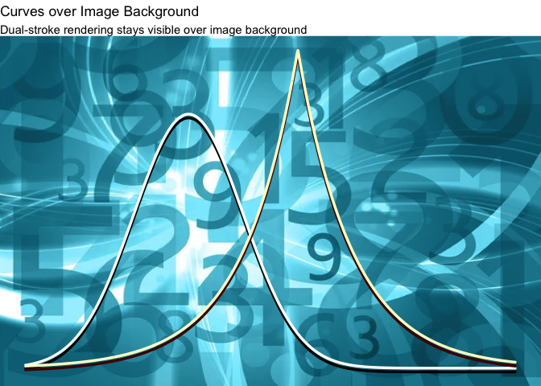
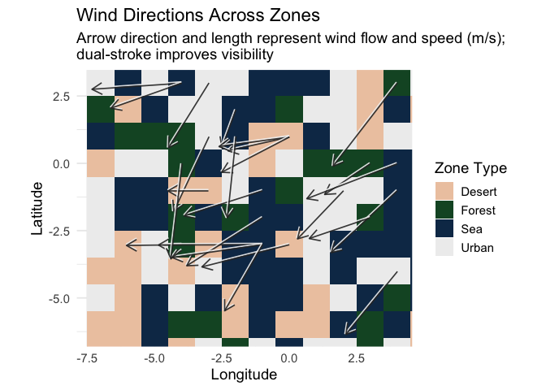

ggtwotone is an R package that extends ggplot2 with dual-stroke and contrast-aware geoms. It helps you create clear, high-contrast annotations and lines that remain visible across complex or variable backgrounds.
What’s Inside
geom_segment_dual(): Dual-stroke line segments with vertical offset
geom_lm_dual(): Dual-tone regression line with contrast-aware strokes
geom_curve_dual(): Dual-stroke curved line annotations
geom_curve_dual_function(): Plot mathematical or statistical functions as smooth dual-stroke curves
geom_text_contrast(): Automatically switches between light/dark text color based on background
adjust_contrast_pair(): Helper function to find contrast-boosted color pairs using WCAG/APCA
Installation
You can install the development version of ggtwotone from GitHub with:
# install.packages("pak")
pak::pak("bwanniarachchige2/ggtwotone")Example
These are some examples which show you how to use the package:
library(ggtwotone) # automatically loads ggplot2 if it is not active
#> Loading required package: ggplot2
library(magick)
#> Linking to ImageMagick 6.9.12.93
#> Enabled features: cairo, fontconfig, freetype, heic, lcms, pango, raw, rsvg, webp
#> Disabled features: fftw, ghostscript, x11
library(grid)
img <- magick::image_read("man/figures/background_image.jpg")
# Convert image to a rasterGrob
bg_grob <- grid::rasterGrob(img, width = unit(1,"npc"), height = unit(1,"npc"))
# Plot
ggplot() +
annotation_custom(bg_grob, xmin = -Inf, xmax = Inf, ymin = -Inf, ymax = Inf) +
geom_curve_dual_function(
fun = dnorm,
xlim = c(-3, 6),
color1 = "#FFFFFF",
color2 = "#000000",
offset = 0.003,
linewidth = 1.2,
smooth = TRUE
) +
geom_curve_dual_function(
fun = function(x) 0.5 * exp(-abs(x - 2)),
xlim = c(-3, 6),
color1 = "#FFFFCC",
color2 = "#4B0000",
offset = 0.003,
linewidth = 1.2,
smooth = TRUE
) +
coord_cartesian(ylim = c(0, 0.5)) +
theme_void() +
theme(
plot.background = element_rect(fill = "transparent", color = NA),
panel.background = element_rect(fill = "transparent", color = NA)
) +
labs(
title = "Curves over Image Background",
subtitle = "Dual-stroke rendering stays visible over image background"
)
library(dplyr)
#>
#> Attaching package: 'dplyr'
#> The following objects are masked from 'package:stats':
#>
#> filter, lag
#> The following objects are masked from 'package:base':
#>
#> intersect, setdiff, setequal, union
# Zone-colored background
set.seed(42)
tile_df <- expand.grid(x = -7:7, y = -7:7)
zones <- c("Desert", "Forest", "Sea", "Urban")
zone_colors <- c(
"Desert" = "#EDC9AF",
"Forest" = "#14532d",
"Sea" = "#0F3556",
"Urban" = "#eeeeee"
)
tile_df$zone <- sample(
zones,
size = nrow(tile_df),
replace = TRUE,
prob = c(0.2, 0.2, 0.4, 0.2)
)
# Realistic wind vectors
set.seed(42)
n <- 25
wind_df <- data.frame(
x = sample(-4:4, n, replace = TRUE),
y = sample(-4:4, n, replace = TRUE),
angle = runif(n, 180, 270), # Southwest quadrant
speed = runif(n, 1.5, 4) # Speed in m/s
) |>
mutate(
xend = x + speed * cos(angle * pi / 180),
yend = y + speed * sin(angle * pi / 180)
)
# Plot
ggplot() +
geom_tile(data = tile_df, aes(x = x, y = y, fill = zone)) +
scale_fill_manual(values = zone_colors, name = "Zone Type") +
geom_segment_dual(
data = wind_df,
aes(x = x, y = y, xend = xend, yend = yend),
# colour1 = "#FFFFFF", colour2 = "#111111",
linewidth = 1.2,
arrow = arrow(length = unit(0.15, "inches"), type = "open"),
alpha = 0.9
) +
coord_fixed(xlim = range(c(wind_df$x, wind_df$xend)),
ylim = range(c(wind_df$y, wind_df$yend))) +
theme_minimal(base_size = 14) +
theme(
panel.background = element_rect(fill = "white", color = NA)
) +
labs(
title = "Wind Directions Across Zones",
subtitle = "Arrow direction and length represent wind flow and speed (m/s);\ndual-stroke improves visibility",
x = "Longitude",
y = "Latitude"
)
#> Warning in geom_segment_dual(data = wind_df, aes(x = x, y = y, xend = xend, :
#> Ignoring empty aesthetics: `colour1` and `colour2`.
This example visualizes wind directions and speeds over a zone-classified terrain map using geom_segment_dual().
Arrow length is scaled by wind speed (in m/s), and dual-stroke styling ensures clear visibility across contrasting terrain types such as desert, forest, sea, and urban zones.
library(ggplot2)
library(ggtwotone)
df <- mpg
# plot
ggplot(df, aes(x = displ, y = hwy)) +
geom_point(color = "darkgreen", size = 3, alpha = 0.7) +
geom_lm_dual(
data = df,
mapping = aes(x = displ, y = hwy),
method = "lm",
formula = hwy ~ displ,
base_color = "#555555",
contrast = 4.5,
method_contrast = "auto",
linewidth = 1.2
) +
theme_minimal(base_size = 14) +
labs(
title = "Engine Displacement vs. Highway MPG",
subtitle = "Regression line with dual-stroke contrast for visibility",
x = "Displacement (L)",
y = "Highway MPG"
)
#> Warning: Duplicated aesthetics after name standardisation: colour1 and colour2
#> Warning in geom_segment_dual(data = reg_segment, mapping = aes(x = x, y = y, :
#> Ignoring empty aesthetics: `colour1` and `colour2`.
library(dplyr)
# Sample from real storm data
data("storms", package = "dplyr")
storm_subset <- storms %>%
filter(name == "Katrina", year == 2005) %>%
mutate(
x = lag(long), y = lag(lat),
xend = long, yend = lat
) %>%
filter(!is.na(x), !is.na(y)) # remove first row with NA lag
# Plot
ggplot(storm_subset) +
geom_segment_dual(
aes(x = x, y = y, xend = xend, yend = yend, group = 1),
color1 = "white", color2 = "black",
linewidth = 1.2,
arrow = arrow(length = unit(0.08, "inches"), type = "open")
) +
geom_point(aes(x = xend, y = yend, color = wind), size = 2) +
scale_color_viridis_c(option = "C", name = "Wind Speed") +
coord_fixed() +
labs(
title = "Storm Track of Hurricane Katrina (2005)",
subtitle = "Arrow direction shows storm movement; \nstroke ensures visibility on top of wind-colored dots",
x = "Longitude", y = "Latitude"
) +
theme_dark()
#> Warning: Duplicated aesthetics after name standardisation: colour1 and colour2
#> Warning in geom_segment_dual(aes(x = x, y = y, xend = xend, yend = yend, :
#> Ignoring empty aesthetics: `colour1` and `colour2`.
Drawing two lines side by side
The basic idea of drawing line segments with the segment_dual geom is to replace any line segment from A to B by two line segments drawn side by sidein different color hues chosen such that at least one of the coior hues has a sufficiently large (color) contrast to any background colors.
dframe <- data.frame(x =c(1,3,5), xmax = c(2, 4, 6), y = c(3,2,1), ymax=c(3,4,5), group = 4:6)
dframe |>
ggplot(aes(x = x, xend=xmax, y = y, yend=ymax)) +
geom_point(size = 5) +
geom_point(aes(x = xmax, y = ymax), size = 5) +
geom_segment(aes(group = group), linewidth = 20, alpha = 0.5) +
geom_segment_dual(aes(group = group, color1 = factor(group)), linewidth = 20, alpha = 0.5) +
theme_bw() + theme(aspect.ratio = 1/3) #+
#> Warning in geom_segment_dual(aes(group = group, color1 = factor(group)), :
#> Ignoring empty aesthetics: `colour1` and `colour2`.
# geom_point(size = 5) +
# geom_point(aes(x = xmax, y = ymax), size = 5)Motivation
In real-world plots, especially on mixed backgrounds (grayscale tiles, images, or map layers), default ggplot2 annotations can disappear. ggtwotone solves this with:
Dual-stroke visibility: top and bottom layers ensure readability
Contrast checking: uses APCA/WCAG to optimize color pairing
Fallback safety: gracefully assigns black/white when needed
You can explore all functions in the Reference Manual, or see them in the R help tab after loading the package.